Собственные SVG-концепты: четыре обычных врага, новый союзник и босс на пяти уровнях. Кожа и кости сохраняют цвет; меняются одежда, броня и оружие.
Голем плоти показан отдельно в двух вариантах призыва. Клик по персонажу открывает исходный SVG крупно.
Кости, меч, щит и нарастающая броня
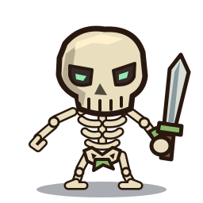
Кости и простой меч
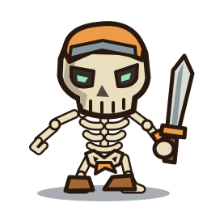
Шлем и обмотки
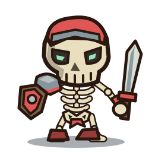
Щит и наплечник
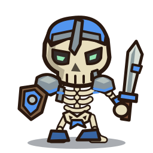
Боковая броня и стальной гребень
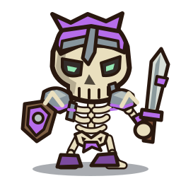
Полная экипировка и усиленный меч
Тяжёлое тело, рваная ткань и грубое оружие
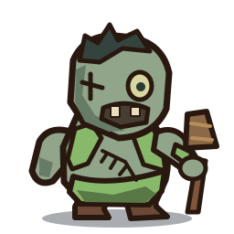
Рваная одежда и дубина
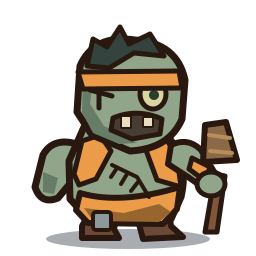
Повязка и защита ноги
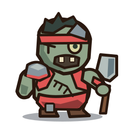
Наплечник и тесак
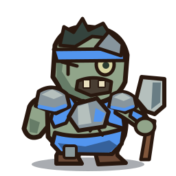
Нагрудник и второй наплечник
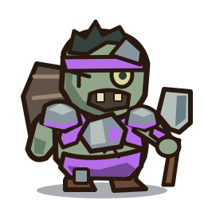
Защита спины и тяжёлое снаряжение
Низкая стойка, длинные руки и когти
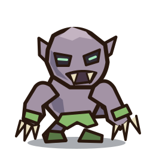
Обнажённые когти
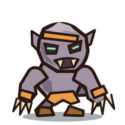
Повязка и обмотки
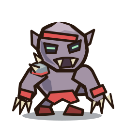
Костяной наплечник
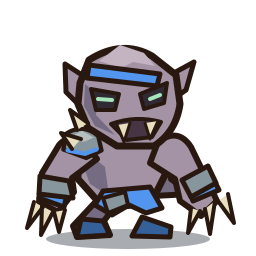
Стальные наручи
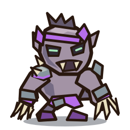
Усиленные когти и костяной венец
Лечение → скелеты → голем плоти
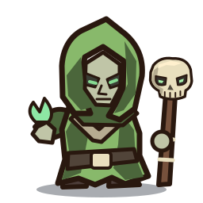
Лечение союзника
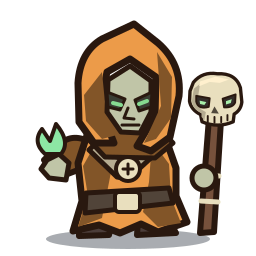
Лечение · усиление характеристик
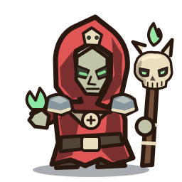
Добавляется призыв скелетов
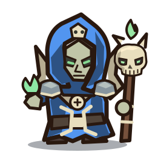
Добавляется сборка голема
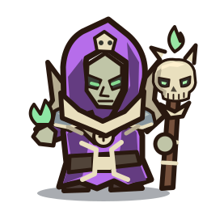
Более живучий и быстрый голем
Новый союзник · книга, солнечный посох и метка света
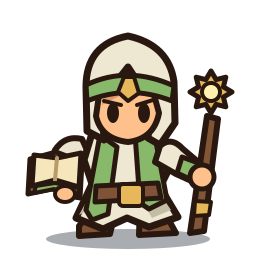
Сгусток света
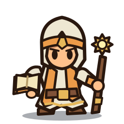
Усиление характеристик
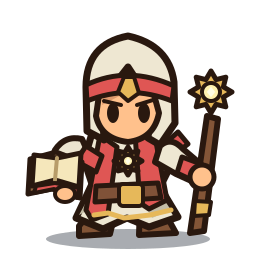
Метка света
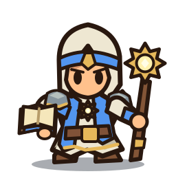
Усиление метки и экипировки
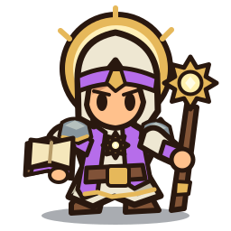
Автоматическое Освящение
Босс · костяная корона, мантия и фонарь
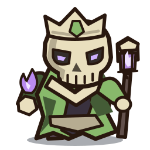
Костяная корона и фонарь
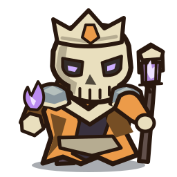
Наплечники
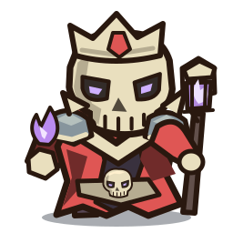
Предложение: свита скелетов
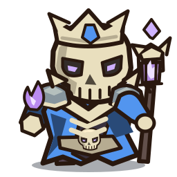
Предложение: костяной покров
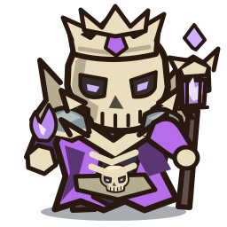
Предложение: погребальный звон
Два варианта призыва. Цвет ремней — уровень некроманта-источника.
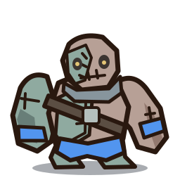
Базовый призыв из трёх останков
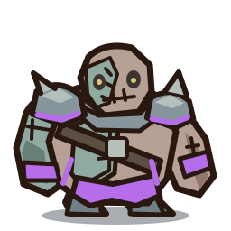
Усиленный: больше ОЗ и скорости
Собственные SVG-концепты окружения. Вихрь и свечение пока статичные — анимация обсуждается отдельно.
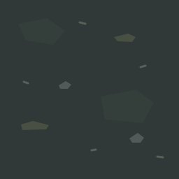
Холодная почва, мох и редкие камешки. Без рамки клетки.
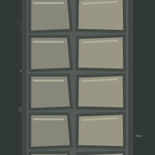
Старая мощёная дорожка; края плиток стыкуются.
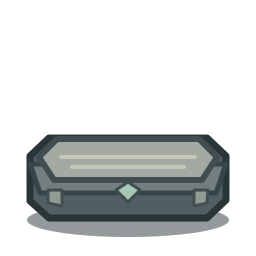
Каменная плита склепа с открытой площадкой для бойца.
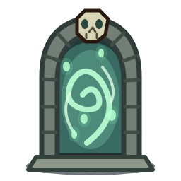
Костяная арка с мятно-зелёным вихрем душ.
10 концептов. Останки и гроб лежат на земле; обломков стен нет.
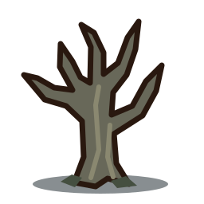
Короткий сухой ствол и крупные развилки.
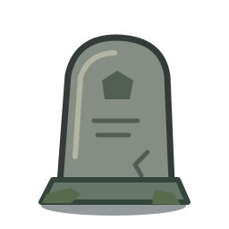
Старая плита с трещиной и мхом у основания.
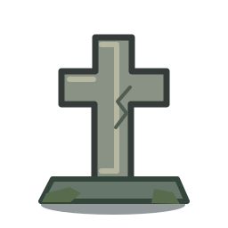
Крупный простой силуэт, без мелких надписей.
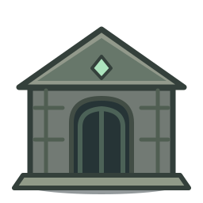
Низкий склеп; крупный декор для свободного места.
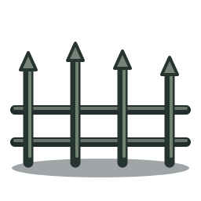
Небольшой участок старой железной ограды.
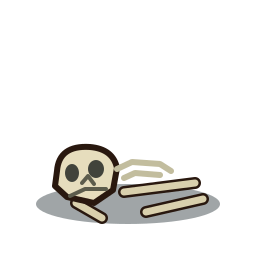
Череп, рёбра и кости лежат на земле.
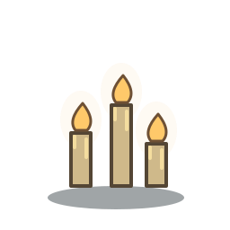
Тёплый акцент среди холодной почвы.
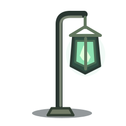
Мягкий зеленоватый огонь в старом фонаре.
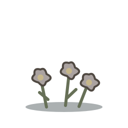
Серо-лиловые цветки и тусклые стебли.
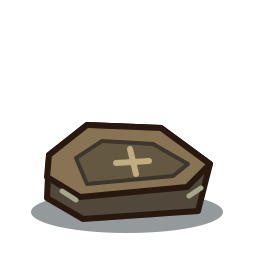
Закрытый старый гроб, лежащий на земле.
Композиция для оценки сочетания ассетов. Башня — существующая. Это статичное превью, размеры и размещение ещё не меняют генератор игры.
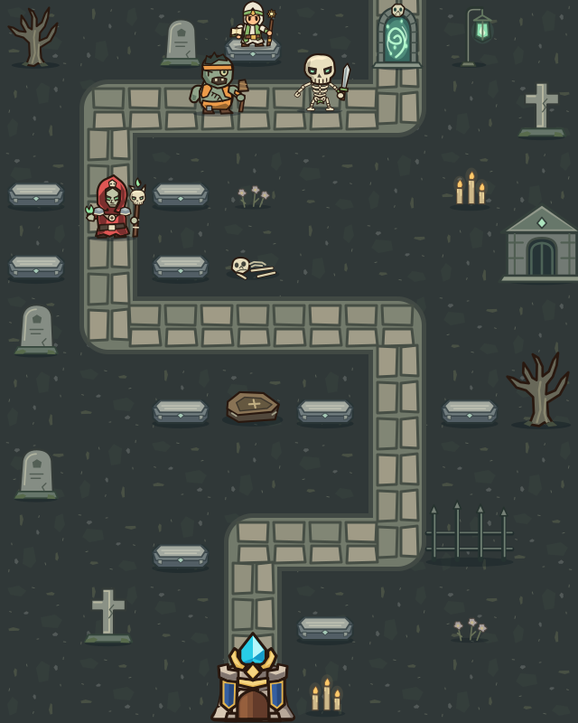